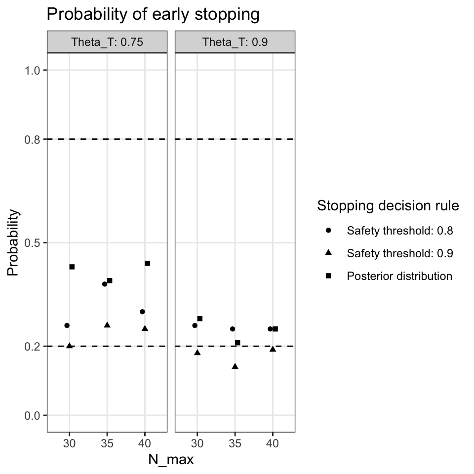
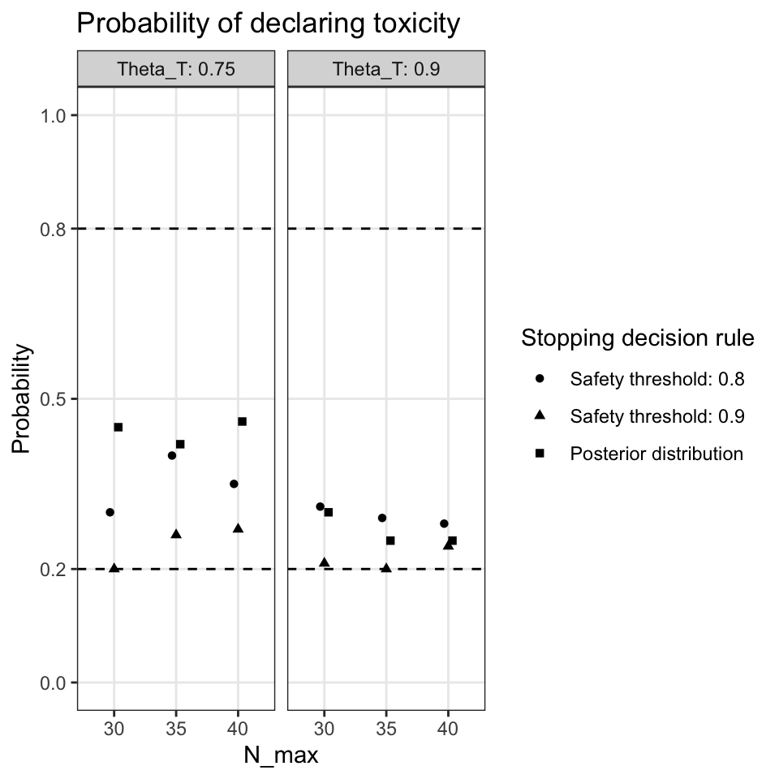

Phase II trials are often single-arm trials in early phases but can also be multi-arm (non-)randomized controlled trials in later phases [1]. The aim of early phase-II designs is to assess efficacy of a new treatment measured by clinical response in a small population of 30-100 patients. Early phase II trials can be designed as two- or three stage trials using frequentist approaches like Simon’s two stage design. In this chapter we use a Bayesian predictive probability approach to analyse an early phase-II trial [2][3]. The aim is to compare two different decision rules for early stopping the trial: One uses the posterior distribution given the interim data, the second one uses the predictive distribution given the interim data and future events.
3.1 Background
Let \(p\) the true toxicity rate and \(\pi \sim Beta(a,b)\) be a design prior on \(p\). Our null hypothesis of interest is \(H_0: p \leq p_0\) versus \(H_1: p>p_0\), that is, we compare, say, the clinical response \(p\) toa prespecified threshold \(p_0\). Suppose that we plan interim looks \(j\geq 1\) after \(N_j\) patients were recruited and \(r_j\) toxicity events occurred. Under the prior \(\pi\) the posterior distribution is beta distributed \(p|r_j \sim Beta(a+r_j, b+N_j-r_j)\). Suppose that we plan to recruit \(N_{max}\) patients. Let \(Y_j\) be the number of toxicities in future \(m_j=N_{max}-N_j\) patients at interim look \(j\geq 1\). Under the prior \(\pi\), \(Y_j\) is beta-binomial distributed \(Y_j \sim Betabinomal(i|m_j, a+r_j, b+N_j-r_j)\) and \(p|r_j,y_j \sim Beta(a+r_j+y_j, b+N_{max}-N_j-r_j-y_i)\).
Working example
Suppose that the goal of a phase-II trial is to evaluate safety of new chemotherapy treatment investigating the discontinuation rate \(p\) as primary endpoint. Discontinuation is defined based on toxicity grading from the US National Cancer Institute Common Terminology Criteria for Adverse Events (CTCAE).
3.2 Decision rules for stopping the trial
Early stopping using the posterior distribution
The decision to the stop the trial early is based on the decision rule \(P(p> p_0|N_j)>\theta_T\), that is, the posterior distribution given the interim data. If the trial is not stopped early we recruit more patients until \(N_{max}\) is reached.
Early stopping using the predictive distribution
Let \(T_{j,i}:=P(p> p_0|N_j, Y_j=i)\), that is, the posterior distribution given the interim data and future events. Note that because \(Y_j\) are not observed events \(T_{j,i}\) are random variables. The predictive probability for a successful (safe) trial is
\[
PP_j=\sum_{i\leq m} P(Y_j=i|r_j)\cdot I(T_{j,i}>\theta_T), \quad j\geq 1.
\] This is the expectation of \(T_{j,i}\) given the interim data \(j\geq 1\)[2]. If \(PP_j>\theta_S\) then we stop the trial because of safety concerns, otherwise we recruit more patients until \(N_{max}\) is reached. Usually, \(\theta_S\) is chosen to be high (>0.8) [3].
Working example
Based on prior evidence \(p_0\) is set to 0.2. This threshold is based on a result from a previous study where the treatment discontinuation was estimated with 0.17 with 95% confidence intervals (0.10-0.27). Because we want to be conservative we set the parameters for a beta prior to \(a=0.4\) and \(b=0.6\). The mean of the prior is then 0.4. For illustrating purposes we also show a prior with a prior weight of 5 patients which is centered on \(p=0.2\) (\(a=1\), \(b=4\)).
p_0_max <-0.2# Prior informationa_0 <-0.4b_0 <-0.6n <-35r <-0:nn_max <-35n <-seq(10, n_max, 5)r <-0:n_maxm <- n_max-rx <-seq(0,1,0.001)theta_T <-0.75data <-expand.grid(n=n, r=r) %>%arrange(n) %>%filter(n>=r) %>%mutate(i=n_max-n+1)data <-expandRows(data, count=3)data <- data %>%group_by(n, r) %>%mutate(m=n_max-n, ind=1, i=cumsum(ind)-1, ind=NULL)data <- data %>%mutate(cond_postprob=dbbinom(i, size=m, alpha=a_0+r, beta=b_0+n-r), Ti=1-pbeta(p_0_max, a_0+r+i, b_0+n_max-r-i), ind=ifelse(Ti>theta_T, 1, 0), n_max)data <- data %>%select(n_max, n, r, m, i, cond_postprob, Ti, ind)
Suppose we plan a phase-II with a maximum of \(N_{max}=35\) patients. Let us consider the situation where we have reached an initial \(N_1=10\) with \(r_1=2\) observed toxicities and we have to decide whether to stop or continue the trial. Specifically, we calculate for each potential future toxicity from \(m_1\) patients and decide whether \(T_{i,1}>\theta_T=0.75\). The column cond_postprob in the following table is \(p|r_1,y_i\) (because it is conditional on the future outcome \(Y_{j,i}=i\)) and the column \(Ti\) corresponds to \(T_{1,i}\).
Based on this information we calculate \(PP_1\) and decide based on the threshold \(\theta_S=0.9\) whether to stop the trial early or to accrual more patients. For the decision rule based on the posterior probability we calculate the decision to stop the trial using the posterior distribution and use the threshold \(\theta_T=0.75\).
Show R code
threshold_safety <-0.9## Early stopping using predictive distributiondata_pp <- data %>%group_by(n, r) %>%summarise(pp=round(sum(cond_postprob*ind),6), stop_pp=ifelse(pp>threshold_safety, 1, 0))## Early stopping using posterior distributiondata_pp <- data_pp %>%mutate(stop_postdist=ifelse(1-pbeta(p_0_max, a_0+r, b_0+n-r)>theta_T, 1, 0))data_pp %>%filter(n==10)
For each interim look \(j\geq1\) we can then calculate stopping of safety boundaries of the trial. Here we assumed that we recruit 5 additional patients if we do not stop the trial early.
Show R code
data_pp_long <-pivot_longer(data_pp, cols=4:5)stop_boundaries <- data_pp_long %>%filter(value==1) %>%group_by(name, n) %>%summarise(r=min(r), stop=NULL)stop_boundaries$name <-factor(stop_boundaries$name, levels=c("stop_postdist", "stop_pp"),labels=c("Posterior distribution","Predictive distribution"))ggplot(stop_boundaries, aes(x=n, y=r, linetype=name))+geom_step()+scale_y_continuous(limits=c(0, max(stop_boundaries$r)), breaks=0:max(stop_boundaries$r))+ylab("Number of toxic events")+xlab("Number of patients at interim analysis")+theme_bw()+theme(panel.grid =element_blank())+ggtitle("Stopping for safety boundaries")+scale_linetype("")
3.3 Simulation study
3.3.1 Prior with a=0.4, b=0.6
We set up a simulation study to quantify operations characteristics (type-I error, type-II error, the probability to declare toxicity and expected number of patients and toxicities) with the following parameters
Beta prior parameters: a=0.4, b=0.6
True \(p\): 0.2, 0.25, 0.3
\(p_0\): 0.2
\(N_0\): 10
Cohort increase: 5
\(N_{max}\): 30, 35, 40
\(\theta_T\): 0.75, 0.9
\(\theta_S\): 0.8, 0.9, 1
Number of simulation runs: 1000
Stopping decision rules:
Posterior distribution: Stop early if \(P(p> p_0|N_j)>\theta_T\),
Safety threshold: Stop early if \(T_{j,i}>\theta_T\) and \(PP_j>\theta_S\).
Note that the type-I and type-II errors correspond to the proportion of trials which stopped early. If the maximal number of patients was reached the trial cannot be stopped early.


3.3.2 Prior with a=1, b=4
We use the same simulation approach as in the previous subsection but using a a Beta prior with parameters a=1 and b=4.
1.
Mossop H, Grayling MJ, Gallagher FA, Welsh SJ, Stewart GD, Wason JMS. Advantages of multi-arm non-randomised sequentially allocated cohort designs for phase II oncology trials. British Journal of Cancer. 2022;126: 204–210. doi:10.1038/s41416-021-01613-5
2.
Lee JJ, Liu DD. A predictive probability design for phase II cancer clinical trials. Clinical Trials. 2008;5: 93–106. doi:10.1177/1740774508089279
3.
Sambucini V. Efficacy and toxicity monitoring via bayesian predictive probabilities in phase II clinical trials. Statistical Methods & Applications. 2021;30: 637–663. doi:10.1007/s10260-020-00537-3